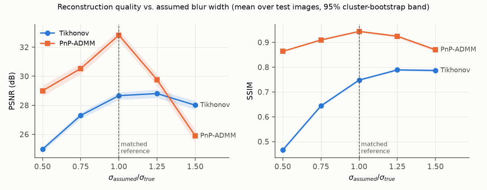
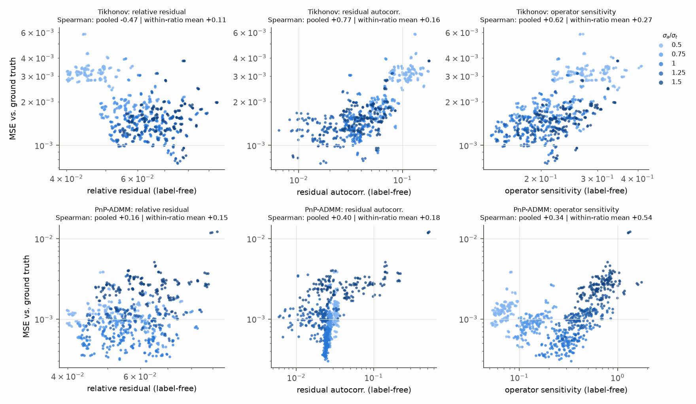
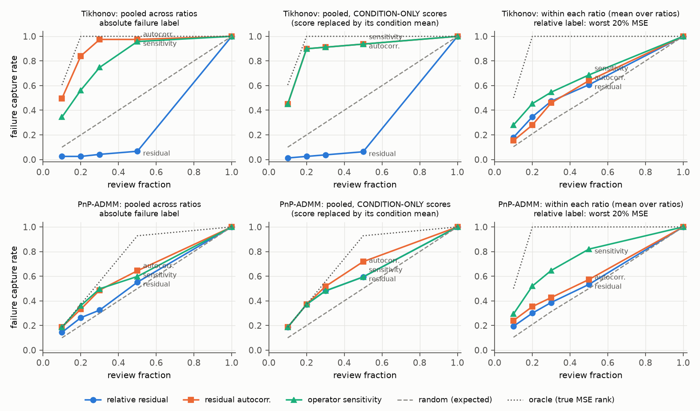
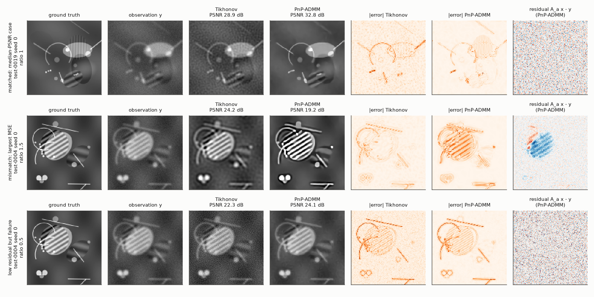

Gaussian deblurring with Tikhonov and Plug-and-Play ADMM when the assumed blur is wrong, and whether ground-truth-free scores flag the resulting failures. A reproducible simulation study.
Portfolio project. Implementation and experiments were assisted by LLM-based coding tools; see AI_USAGE.md. All numbers below are generated from the CSV files in results/ by python -m reconstruction_mismatch report. Synthetic phantoms only in the main study; no claim of clinical validity or methodological novelty.
Model-based image reconstruction assumes a forward operator. In practice the operator is only approximately known (a point-spread function measured on a different day, a mis-estimated blur width). A reconstruction can then be consistent with the data under the assumed operator and still be wrong. If such failures cannot be seen from the data, a reviewer needs some other signal to decide which reconstructions to inspect. This project quantifies both effects in a controlled setting where the truth is known.
y = Aσ_true x + ε, ε ~ N(0, 0.02² I), x ∈ [0,1]128×128, σ_true = 1.5 px. Aσ is circular convolution with a normalised Gaussian kernel truncated at radius ⌈4σ⌉ and renormalised to sum 1. With periodic boundaries A = F⁻¹ diag(H) F, so the forward map, its exact adjoint A* = F⁻¹ diag(conj H) F and all linear solves are FFT-diagonal. Observations are not clipped. Every reconstruction uses Aσ_assumed with σ_assumed/σ_true ∈ {0.5, 0.75, 1.0, 1.25, 1.5}. The same y (same image, same noise realisation) is used for every method and every σ_assumed. Verified numerically (pytest): kernel normalisation; constant images preserved; FFT convolution equals a direct spatial sum, including for asymmetric kernels; the adjoint inner-product identity holds to 1e-12 relative error. Periodic boundaries are a modelling convenience, not a model of real optics; because the data are generated with the same circular model, boundary mismatch is not part of this study.
Tikhonov. ẑ = argmin ½‖Az − y‖² + (λ/2)‖z‖² = F⁻¹[conj(H)·Fy / (|H|² + λ)]. Checked against a dense direct solve (14×14), autograd and finite-difference gradients, and gradient descent. Clipping to [0,1] is a separate post-processing step; metrics and residual scores use the clipped output for both methods.
PnP-ADMM. Scaled ADMM with the proximal step replaced by a denoiser D: xk+1 = F⁻¹[(conj(H)·Fy + ρ·F(vk − uk)) / (|H|² + ρ)] (exact), vk+1 = D(xk+1 + uk; σ_d), uk+1 = uk + xk+1 − vk+1. It starts from x⁰ = v⁰ = y, u⁰ = 0, runs a fixed number K of iterations and outputs vK. With a learned denoiser there is no explicit objective being minimised and no convergence guarantee; the final relative change ‖vK − vK−1‖/‖vK−1‖ is recorded instead (median 4.3e-04 at the matched operator; no divergence or non-finite output in any of the 144×5 runs). The data step was checked against a dense solve and its optimality condition. With D = identity, the closed-form proximal-point recursion is reproduced.
Denoiser. A small noise-conditional residual CNN (8 conv layers, 32 channels, 56385 parameters, circular padding, input [x, σ-map]) trained only on 400 synthetic training phantoms (4000 Adam iterations, σ ~ U[0, 0.1], 2202 s on CPU). Held-out denoising on validation phantoms (fixed noise realisation):
| noise σ | noisy input PSNR | random-init model | trained model | gain vs input |
|---|---|---|---|---|
| 0.01 | 40.00 | 23.33 | 46.72 | +6.72 dB |
| 0.02 | 33.96 | 23.05 | 42.74 | +8.78 dB |
| 0.05 | 26.05 | 21.52 | 37.03 | +10.98 dB |
| 0.1 | 20.00 | 18.37 | 32.16 | +12.16 dB |
The randomly initialised network is worse than its input at every σ; the trained one improves on it at every σ.
Data. Synthetic phantoms (ellipses with flat or smooth profiles, small discs, clusters of nearby small objects, thin lines and arcs, gratings of 3 to 28 cycles/image, smooth background), drawn on a 2× grid and box-averaged. Train / validation / test = 400 / 24 / 48 images, each generated from its own seed stream; split overlap is checked by hashing. Test observations: 48 images × 3 noise seeds.
Fair tuning. All hyper-parameters were chosen by mean PSNR on the validation images under the matched operator (one noise realisation each), then frozen for all mismatch levels and the test set. Tikhonov: λ over 33 log-spaced values in [1e-4, 1], selected λ = 0.0316 (validation 28.27 dB). PnP: ρ ∈ {0.05, 0.1, 0.2, 0.5, 1}, σ_d ∈ {0.01, 0.02, 0.03, 0.05, 0.08}, K ∈ {5, 10, 20, 30, 40}, selected ρ = 0.1, σ_d = 0.05, K = 40 (validation 32.77 dB). K = 40 is the grid edge. A validation-only check with longer runs (scripts/check_iterations.py) gave +0.001 dB at K = 60 and -0.066 dB at K = 100 relative to K = 40, so the grid was kept. The matched condition is shown as a reference, not as an optimum or upper bound.
Code boundary. The reconstruction stage reads only observations.npz (y). Ground truth and σ_true are read by simulation, tuning (validation) and evaluation only; a test enforces this by disabling the ground-truth loaders during the run stage.
Label-free scores (higher = more suspicious, fixed in advance): (i) relative residual ‖Aax̂ − y‖/‖y‖; (ii) residual autocorrelation, the mean |R(d)|/R(0) of the mean-centred residual over the 48 lags with |dy|,|dx| ≤ 3, d ≠ 0 (circular, via FFT); (iii) operator sensitivity ‖x̂(σ_a(1+δ)) − x̂(σ_a(1−δ))‖ / (2δ‖x̂‖), δ = 0.05 relative (a ±5% change of σ_a), computed by re-running the same reconstructor on the same y. Sensitivity is a local perturbation measure, not a calibrated or posterior uncertainty.
Failure labels (fixed on validation before testing). Absolute: PSNR below the method's median validation PSNR at the matched operator minus 3 dB, giving thresholds 25.35 dB (Tikhonov) and 30.03 dB (PnP). Relative (auxiliary): the worst 20% by MSE within each (method, ratio, noise seed). Review curves: reconstructions are ranked by score and the top k = ⌈f·n⌉ are reviewed, f ∈ {10, 20, 30, 50, 100}%. The capture rate is the fraction of failures reviewed. Ties are split proportionally (the expectation under random tie-breaking). The random-review expectation is k/n and the oracle (true-MSE ranking) is min(k, F)/F. Capture is undefined when F = 0. Two evaluations are kept apart: (A) within each mismatch condition and (B) pooled across conditions. Because σ_true is fixed here, σ_assumed alone identifies the mismatch level, so pooled performance can merely reflect the condition. To test this, each score is compared with its condition-only version (the score replaced by its mean over the condition). Statistics: 95% percentile intervals from a cluster bootstrap over the 48 test images (2000 resamples; noise seeds and conditions of an image are resampled together). With 48 images these intervals are exploratory.

| method | σa/σt | PSNR dB [95% CI] | SSIM [95% CI] | abs. failures | runtime / image |
|---|---|---|---|---|---|
| Tikhonov | 0.5 | 24.98 [24.80, 25.13] | 0.466 [0.459, 0.473] | 107/144 | 0.1 ms |
| Tikhonov | 0.75 | 27.31 [27.08, 27.51] | 0.644 [0.638, 0.649] | 3/144 | 0.1 ms |
| Tikhonov | 1 (matched ref.) | 28.66 [28.39, 28.90] | 0.748 [0.744, 0.752] | 3/144 | 0.1 ms |
| Tikhonov | 1.25 | 28.81 [28.51, 29.08] | 0.789 [0.785, 0.793] | 3/144 | 0.3 ms |
| Tikhonov | 1.5 | 28.01 [27.70, 28.29] | 0.787 [0.781, 0.792] | 3/144 | 0.1 ms |
| PnP-ADMM | 0.5 | 29.00 [28.63, 29.35] | 0.864 [0.859, 0.868] | 113/144 | 1013.6 ms |
| PnP-ADMM | 0.75 | 30.53 [30.17, 30.87] | 0.910 [0.906, 0.913] | 43/144 | 1041.4 ms |
| PnP-ADMM | 1 (matched ref.) | 32.83 [32.50, 33.16] | 0.944 [0.940, 0.948] | 3/144 | 1007.9 ms |
| PnP-ADMM | 1.25 | 29.75 [29.36, 30.13] | 0.925 [0.919, 0.930] | 85/144 | 1040.5 ms |
| PnP-ADMM | 1.5 | 25.89 [25.45, 26.29] | 0.870 [0.863, 0.876] | 144/144 | 1011.6 ms |
At the matched operator PnP-ADMM exceeds Tikhonov by 4.17 dB [3.94, 4.40]. The learned prior is, however, much less tolerant of mismatch. Relative to its own matched result, PnP's PSNR changes by -3.83 dB at ratio 0.5 and -6.94 dB at ratio 1.5. Tikhonov's changes by -3.69 dB and -0.66 dB. At ratio 1.5 the ordering reverses in PSNR: PnP trails Tikhonov by 2.12 dB (PnP − Tikhonov = -2.12 [-2.37, -1.87]) and better on 0% of images. Its SSIM is still higher (+0.083), so the two metrics disagree on which output is better. Over-estimating the blur makes PnP over-sharpen (halos and exaggerated stripes, Fig. 4 middle row); under-estimating leaves residual blur. Notably, the matched operator is not Tikhonov's best setting under a λ tuned at the matched operator: ratio 1.25 is +0.144 dB [+0.098, +0.187] better than matched (on 85% of images). A plausible but untested explanation is that a slightly wider assumed kernel boosts mid frequencies that the λ-penalty otherwise over-shrinks. On the CPU (batched), Tikhonov takes well under 1 ms per image and PnP (40 iterations) 1.01 s per image. The sensitivity score adds two reconstructions (2.05 s per image for PnP). No run diverged or produced non-finite values.
Observation consistency is not accuracy. The mean relative residual rises monotonically with σ_assumed for both methods (Tikhonov 0.0461 at ratio 0.5 → 0.0699 at 1.5), whatever the error. For Tikhonov this follows from the closed form: before clipping, Aaẑ − y = −F⁻¹[λ/(|Ha|² + λ)·Fy]. A narrower assumed kernel (|Ha| closer to 1) therefore fits y more easily, even though the image stays blurred. As a result the residual is lowest where Tikhonov fails most (ratio 0.5 holds 107 of its absolute failures; every other ratio holds 3). Its pooled AUROC for Tikhonov failures is 0.10, i.e. a worse-than-random ranking. Fig. 4 (bottom row) shows a PnP failure (PSNR below threshold) whose residual looks like white noise.

| method | score | Spearman vs MSE, pooled [95% CI] | AUROC failure, pooled [95% CI] | Spearman within ratio 1.0 [95% CI] | Spearman within, range over ratios |
|---|---|---|---|---|---|
| Tikhonov | relative residual | -0.47 [-0.60, -0.37] | 0.10 [0.03, 0.19] | +0.05 [-0.27, +0.34] | +0.03 to +0.29 |
| Tikhonov | residual autocorrelation | +0.77 [+0.71, +0.82] | 0.95 [0.91, 0.98] | -0.07 [-0.32, +0.18] | -0.07 to +0.44 |
| Tikhonov | operator sensitivity | +0.62 [+0.53, +0.70] | 0.86 [0.83, 0.90] | +0.26 [-0.04, +0.50] | +0.06 to +0.54 |
| PnP-ADMM | relative residual | +0.16 [+0.04, +0.27] | 0.58 [0.51, 0.65] | +0.05 [-0.26, +0.32] | +0.05 to +0.20 |
| PnP-ADMM | residual autocorrelation | +0.40 [+0.30, +0.50] | 0.68 [0.63, 0.72] | +0.35 [+0.14, +0.53] | -0.01 to +0.45 |
| PnP-ADMM | operator sensitivity | +0.34 [+0.30, +0.37] | 0.64 [0.59, 0.68] | +0.39 [+0.09, +0.62] | +0.39 to +0.65 |
Pooled detection mostly reflects the mismatch level. On the absolute label, Tikhonov's failures are concentrated at ratio 0.5. There, residual autocorrelation reviews 0.84 of failures at 20% review, but its condition-only version does as well or better (0.90). The same holds for every score and both methods (table below; condition-only in parentheses). In this design the pooled numbers say "this σ_assumed is suspicious", not "this image is wrong", and they would not carry over to a setting where σ_true varies.
| method | ranking | 10% | 20% | 30% | 50% |
|---|---|---|---|---|---|
| Tikhonov | relative residual | 0.03 (0.01) | 0.03 (0.03) | 0.04 (0.04) | 0.07 (0.06) |
| Tikhonov | residual autocorrelation | 0.50 (0.45) | 0.84 (0.90) | 0.97 (0.91) | 0.97 (0.94) |
| Tikhonov | operator sensitivity | 0.34 (0.45) | 0.56 (0.90) | 0.75 (0.91) | 0.96 (0.94) |
| Tikhonov | random (expected) | 0.10 | 0.20 | 0.30 | 0.50 |
| Tikhonov | oracle (true MSE) | 0.61 | 1.00 | 1.00 | 1.00 |
| PnP-ADMM | relative residual | 0.14 (0.19) | 0.26 (0.37) | 0.32 (0.48) | 0.55 (0.59) |
| PnP-ADMM | residual autocorrelation | 0.19 (0.19) | 0.33 (0.37) | 0.49 (0.52) | 0.64 (0.72) |
| PnP-ADMM | operator sensitivity | 0.19 (0.19) | 0.36 (0.37) | 0.50 (0.48) | 0.60 (0.59) |
| PnP-ADMM | random (expected) | 0.10 | 0.20 | 0.30 | 0.50 |
| PnP-ADMM | oracle (true MSE) | 0.19 | 0.37 | 0.56 | 0.93 |
Within a condition, sensitivity carries a modest signal. The relative label removes the condition effect by construction (condition-only equals random review at 20%). On it, operator sensitivity is the strongest score for both methods: pooled capture@20% 0.33 [0.24, 0.45] for PnP and 0.37 [0.24, 0.51] for Tikhonov, against 0.20 for random review and 0.96 for the oracle. The relative residual (0.27 [0.14, 0.39] for PnP) and the autocorrelation (0.24 [0.17, 0.34]) are closer to random. The intervals overlap, so the ordering of the scores is suggestive rather than established. For PnP the within-condition Spearman correlation of sensitivity with MSE is positive at every ratio (table above). Its level, however, tracks σ_assumed (mean 0.07 at ratio 0.5 vs 0.71 at 1.5). Under-estimated cases therefore score low despite large errors (Fig. 2): sensitivity flags over-sharpening better than leftover blur. Within individual conditions, sensitivity's capture@20% on the relative label ranges from 0.33 (ratio 1.5) to 0.67 (ratio 0.75) for PnP (all values: failure_capture_within.csv).
On the absolute label, within-condition capture is mostly uninformative: the matched and mildly mismatched conditions contain a single failing image per noise seed for Tikhonov (and for PnP at the matched operator), so capture there is 0 or 1. Ratio 1.5 for PnP fails on every image (capture equals the review fraction).


E1: public biomedical images with simulated blur (OrganCMNIST, 128×128). These are abdominal CT organ crops from MedMNIST+ v3.0 (CC BY 4.0, md5-verified; official split by CT scan, 115/16/70 scans). We used 24 validation and 48 test slices sampled from the official validation and test splits, applied the same simulated blur and noise, and re-tuned all hyper-parameters on the validation slices. This is a public-biomedical-image-based synthetic observation experiment: the released slices already contain CT noise and resampling blur and serve as "ground truth"; nothing here is a CT measurement or a clinical evaluation. The PnP denoiser is the phantom-trained CNN (domain shift). Its tuning chose the grid boundary for all three hyper-parameters (ρ = 0.05, σ_d = 0.08, K = 5) on a flat validation surface, and the grid was not widened afterwards, so PnP may be slightly under-tuned. Per-slice scan IDs are not released, so slices from one scan can co-occur and the bootstrap (over slices) is optimistic.
| PSNR dB [95% CI] | σa/σt=0.5 | σa/σt=0.75 | σa/σt=1 | σa/σt=1.25 | σa/σt=1.5 |
|---|---|---|---|---|---|
| Tikhonov | 24.00 [23.6, 24.4] | 26.63 [26.1, 27.1] | 28.53 [28.0, 29.1] | 28.94 [28.2, 29.6] | 27.72 [26.9, 28.6] |
| PnP-ADMM | 28.95 [27.8, 30.1] | 30.79 [29.6, 32.0] | 32.35 [31.1, 33.6] | 30.08 [28.8, 31.4] | 26.68 [25.4, 28.1] |
The synthetic findings carry over qualitatively. PnP leads at the matched operator by 3.82 dB [3.06, 4.64] and trails Tikhonov at ratio 1.5 by 1.05 dB (PnP − Tikhonov = -1.05, [-1.60, -0.41]). Tikhonov is again better at ratio 1.25 than at matched (+0.41 dB). The relative residual again rises with σ_assumed (0.037 → 0.057; pooled AUROC for Tikhonov failures 0.29). One difference: on these images the autocorrelation and sensitivity scores do somewhat better than their condition-only versions for PnP (pooled capture@20%, absolute label: 0.52 for sensitivity vs 0.40 condition-only). On the relative label they reach 0.40 [0.28, 0.52] (sensitivity) against 0.20 for random review. Given the optimistic intervals and a single dataset, we read this as a hypothesis for follow-up, not a finding.
E2: a pretrained denoiser (FFDNet, KAIR model zoo, MIT licence). This is the published grey-scale FFDNet, trained by its authors on natural photographs, loaded into a re-implemented topology (strict key and shape match). It replaced the small CNN in PnP on the quick profile only (12 test phantoms × 2 seeds; the full scale would take ~1.5 h on this CPU) and was re-tuned on validation data (ρ = 0.05 at the grid edge, σ_d = 0.05, K = 30). As a pure denoiser on the held-out phantoms it is slightly better than our CNN (gain +9.06 vs +8.78 dB at σ = 0.02). Inside PnP on the same test observations it is worse at the matched operator (31.37 vs 32.68 dB). Under blur under-estimation (ratio 0.5) it degrades much more (25.54 vs 28.59 dB, SSIM 0.52) without diverging (median final relative change 1.5e-04); we did not investigate the cause. At ratio 1.5 it again falls below Tikhonov (PnP − Tikhonov = -2.73 dB). Denoising quality alone therefore did not predict PnP accuracy or robustness to mismatch here; with 12 images and a boundary-selected ρ this is an anecdote, not a comparison of priors.
Python 3.12, PyTorch 2.15 (CPU), Windows 11. The exact versions are in requirements-lock.txt and each results/<run>/environment.json, which also records the code hash, git state and device checks. Each run directory stores the resolved config, data split hashes, checkpoint hash, per-image CSV and stage status. Cached stages are keyed by data, config, checkpoint and code hashes. A forced recompute of the quick profile reproduced all non-timing per-image values bit-for-bit.
python -m venv .venv && .venv\Scripts\activate # (source .venv/bin/activate on macOS/Linux)
pip install torch --index-url https://download.pytorch.org/whl/cpu && pip install -e ".[test]"
pytest -m "not slow" # numerical checks
python -m reconstruction_mismatch reproduce --profile quick # ~13 min on a 4-core laptop CPU (committed denoiser restored)
python -m reconstruction_mismatch reproduce --profile full # ~55 min; retraining the denoiser adds ~35 min